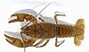

cambarus-bartoni

Has synonym(s): cambarus bartonii
Definition: Cambarus bartonii is a species of crayfish native to eastern North America, where it is called the common crayfish or Appalachian brook crayfish.Cambarus bartonii was the first crayfish to be described from North America, when Johan Christian Fabricius published it under the name Astacus bartonii in his 1798 work Supplementum entomologiae systematicae. The locality where his specimen was captured is not known, but is thought to be near Philadelphia, Pennsylvania.Cambarus bartonii lives in fast–flowing, cool, rocky streams as well as shallow lakes, and is found in the Canadian provinces of Ontario, Quebec and New Brunswick, and in the United States from Maine to Alabama. In the south of its range, C. bartonii is restricted to the Appalachian Mountains and their foothills.Colouration is usually plain dark brown, although mottling is occasionally seen, as is a saddle-shaped marking.Several subspecies of C. bartonii have been recognised, but it is unclear how advisable this is, and work is ongoing to determine patterns of infraspecific variation.Cambarus bartonii is included as a species of Least Concern on the IUCN Red List.
Source: Wikipedia
Wikipedia Page (Something wrong with this association? Let us know.)
Wikidata Page (Something wrong with this association? Let us know.)